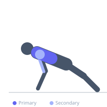

Exercise guide / Stability Ball Push-Up
Stability Ball Push-Up
A push-up variation performed with both hands on a stability ball, creating an unstable surface that substantially increases the activation demand on the serratus anterior, rotator cuff, and core musculature. Because the ball deforms and shifts, the pectorals and stabilizers must work continuously throughout the movement to maintain position and control.
Primary muscles
pectoralis major sternal
pectoralis major clavicular
Secondary muscles
deltoid anterior
triceps lateral head
Stabilizers
pectoralis minor
infraspinatus
supraspinatus
transverse abdominis
Equipment
Swiss Ball (Stability Ball / Exercise Ball)


Starting position
- Kneel behind a stability ball and place both hands on top of it, shoulder-width apart. Walk the feet back until the body forms a straight plank with arms extended.
Setup
- Inflate the stability ball to full firmness. A harder ball is easier to balance on. Use a ball appropriately sized for your height.
Steps
- Step 1: Establish a stable plank with hands on ball, feet on floor, body straight.
- Step 2: Bend the elbows and slowly lower the chest toward the top of the ball, keeping the ball as still as possible.
- Step 3: Descend until chest nearly touches the ball.
- Step 4: Press back to full arm extension, maintaining body control and ball stability.
Coaching cues
- Squeeze the ball inward with both hands — this activates serratus and improves stability
- Think of making the ball stay perfectly still throughout each rep
Breathing
- Inhale on descent, exhale on the press.
Range of motion
- Lower chest as close to the ball surface as control allows. Ball contact is acceptable but do not rest body weight on ball at bottom.
Tempo
- 3-1-2-0 (3s descent, 1s pause, 2s press)
Common mistakes
- Placing hands too far apart, reducing stability
- Allowing the ball to roll forward or backward without correction
- Sagging at the hips or piking — the body must stay rigid
Safety
- Ensure ball is fully inflated and on a non-slip surface
- Master floor push-ups before transitioning to the ball
Training
- hypertrophy: 8–15 reps
- endurance: 15–20 reps
- hypertrophy: 3–4 sets
- endurance: 2–3 sets
- Rest: {'hypertrophy': 75, 'endurance': 45}